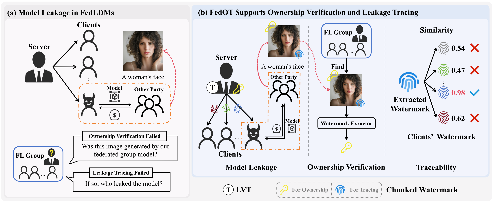
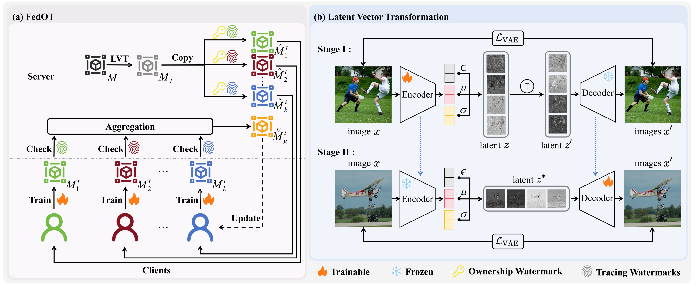
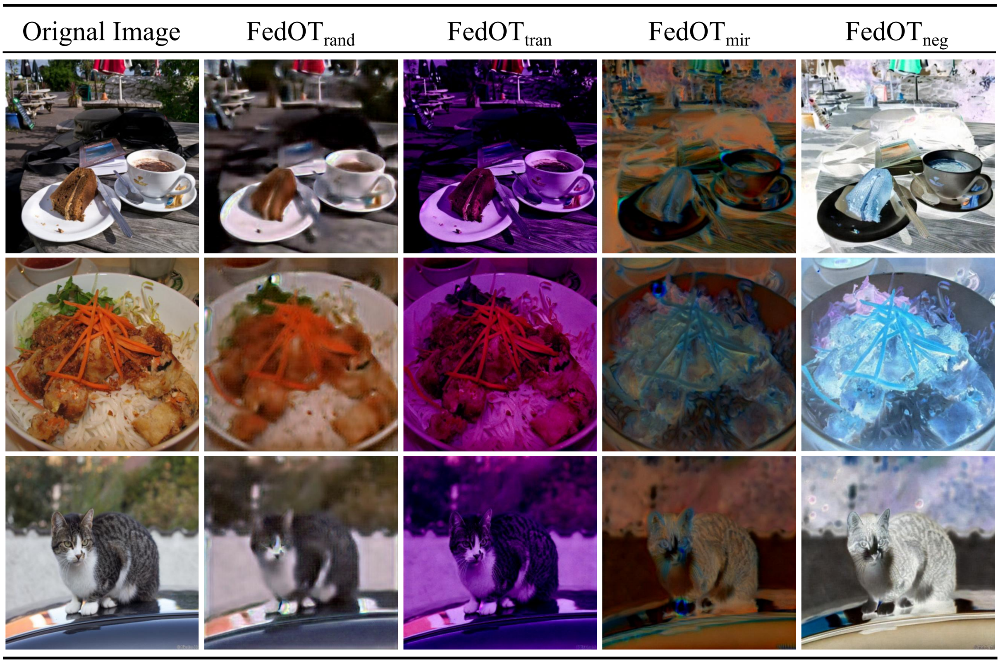
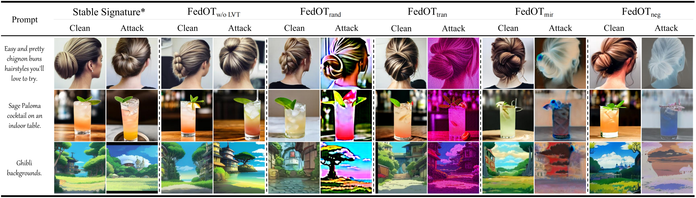

Abstract
Training Latent Diffusion Models (LDMs) within Federated Learning (FL) has attracted increasing attention due to its ability to combine the powerful generative capacity of LDMs with the privacy-preserving properties of FL. However, FL requires sharing the global model with multiple participants, which risks unauthorized model distribution or resale by malicious clients. While an intuitive approach is to adopt existing VAE-based watermarking techniques for LDMs in FL, this strategy falls short in addressing such threats due to two fundamental challenges: (1) Existing methods support ownership verification but lack the ability to trace model leakage to a specific malicious client; (2) VAE-based watermarks are vulnerable, as they can be removed simply by replacing the decoder with a clean counterpart. In this paper, we propose FedOT, the first framework for ownership verification and leakage tracing in federated LDMs. Specifically, to address the first challenge, we design a chunked watermark, where the first part is for ownership verification, and the second part is used for client identification. Furthermore, to overcome the second challenge and secure the model against VAE replacement attack, we introduce Latent Vector Transformation (LVT), which strengthens the connection between the VAE and U-Net latent spaces by modifying the original latent distribution of the VAE. Consequently, any attempt to replace the VAE for watermark removal leads to significant image quality degradation, making the LDM model unusable. Extensive experiments demonstrate that FedOT achieves superior performance in both ownership verification and traceability.
Video
Motivation

Pipeline


VAE reconstruction results after training the encoder with different LVT.

The results after VAE replacement attacks.

More results.

More results.
BibTeX
@inproceedings{cheng2026fedot,
```
title={FedOT: Ownership Verification and Leakage Tracing via Watermarks for Federated LDMs},
author={Wenlong Cheng and Yuan Gan and Yunqiu Xu and Jiaxu Miao},
booktitle={ECCV},
year={2026}
}